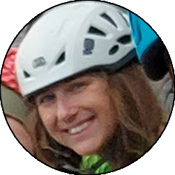

Relazione
| Data Uscita | 26-05-2023, Venerdì | Area | Grigne |
|---|---|---|---|
| Luogo di Partenza | Parcheggio di via del Ram - Mandello del Lario (LC) | Quota |
1180m (circa) la partenza 1480m (circa) l'attacco 1563m la cima |
| Dislivello | 500m (circa) | Tempi | 03:00 ore (01:00 ore la via) |
| Esposizione | Sud-Ovest | Difficoltà Tecnica | V |
| Punti di Appoggio | Nessuno | Acqua | No |
| Partecipanti |
 Laura C,
 Maraja, Maraja,
 Oracolo Oracolo
|
||
(clicca sull'immagine per scarica la traccia GPS)
Accesso
Da Lecco salire in Valsassina fino a Ballabio. Alla rotonda all'ingresso del paese prendere verso sinistra e subito dopo a destra salendo poi per i tornanti fino ai Piani Resinelli. Superato il piazzale (grande parcheggio) all'altezza della chiesa prendere la strada che la costeggia a destra (in piano) e seguirla fino a dove questa diventa carrareccia presso una stanga (indicazioni rifugio Rosalba). Parcheggiare sul lato sinistro (faccia a valle) facendo attenzione a non intralciare il passaggio, oppure prima sempre sulla strada.
Avvicinamento
Seguire la carrareccia che si inoltra prima tra le case, poi in un bel bosco in falsopiano fino a un pezzo in discesa dove si incrocia il canalone della val Tesa. Seguire il sentiero che lo attraversa e prosegue in salita fino a un dosso dove si stacca verso destra la traccia che porta nel canalone del Diavolo (cartelli che indicano Punta Giulia-Costanza-Mongolfiera).
Salire prima per prati (attenzione ai traversi) poi per canalette fino a entrare nel canale vero e proprio, nei pressi di un grande sasso che forma una rientranza a sx. Seguire il canale facendo attenzione ai radi bolli, aggirando prima una parte sulla sinistra per sentiero (è anche possibile salire nel canale, difficoltà maggiori) e poi arrivati a una biforcazione si segue il ramo di destra, esposto ma non difficile, che in breve porta fino a una zona più appoggiata e prativa dove si trova l'ultimo cartello che divide la traccia che sale al Costanza da quella che sale alla Punta Giulia. Seguire la traccia di destra per dorsale prativa ripida ma non difficile, fino alla base del torrione. La via attacca alla base dello spigolo Sud-Ovest, presso un comodo terrazzino con albero che si raggiunge traversando con attenzione il prato a destra del sentiero.
Via
L1: salire la facile placchetta appoggiata (chiodo e resinato) fino alla base di un canale squadrato che permette di superare il tettino. Salirlo con passi atletici (passo chiave, ben protetto da chiodi e fittoni), fino a uscire su rocce più facili che tendendo a destra portano fino in sosta (2 resinati). La via originale non fa il canale squadrato ma passa più a destra su difficoltà minori, ma non so personalmente se è chiodata o meno, la variante è molto chiodata.
» 30m, diversi chiodi, 2 resinati (IV, V, IV)
» 30m, diversi chiodi, 2 resinati (IV, V, IV)
L2: traversare circa 4 metri a sinistra seguendo l'evidente chiodatura fino allo spigolo, che si risale direttamente su ottime mani un po' nascoste e passi atletici. Man mano che si sale le difficoltà diminuiscono, fino alla sosta sul filo dello spigolo (2 resinati).
» 20m, diversi chiodi, 2 resinati (V, IV)
» 20m, diversi chiodi, 2 resinati (V, IV)
L3: salire verticalmente sul bellissimo spigolo con passi atletici, per poi portarsi verso destra sul versante Sud della guglia, e con un traverso ascendente delicato si raggiunge uno strapiombino. Superare direttamente lo strapiombino uscendo su una facile e bella placca, dove le difficoltà finiscono e si prosegue con arrampicata divertente fino all'anticima dove si sosta su fix con catena e la via finisce.
» 30m, qualche chiodo e resinato (IV+, III)
» 30m, qualche chiodo e resinato (IV+, III)
Discesa
La via finisce sull'anticima, con la cima principale (pericolante!) ben visibile di fronte. Si può salire in cima ma personalmente lo sconsiglio: se invece si fosse soddisfatti bisogna portarsi sul lato opposto della salita scendendo per facili roccette (II esposto, rimanere legati) fino a un terrazzo dove un grosso fittone con catena è la sosta della via Normale. Con una doppia da 45m (oppure due calate se si avesse una corda sola) si scende sul versante Nord fino alla selletta di attacco della via Normale, da cui in breve si torna all'attacco della Giovane Italia e da lì si segue l'avvicinamento a ritroso (facendo attenzione a non mancare le deviazioni!) fino al parcheggio.